Greek Myth · Cosmic Law · English Vocabulary
Cosmic Law and the Blood of Troy: What the Death of Penthesilea Teaches About Honor — and the English Words That Carry It
A cinematic illustrated lesson built in Google NotebookLM (Gemini) retells one of the darkest episodes of the Trojan War — and quietly turns it into a masterclass in powerful English vocabulary.

Few stories from the Trojan War carry a moral charge as strange and electric as the death of the Amazon queen Penthesilea. The greatest warrior of the Greeks cut her down in a single decisive strike — and then, when he lifted her helmet and saw her face, the pride of the conqueror dissolved into grief so deep that he stood over her body in solemn mourning. The man who laughed at that grief paid for it with his life. In one episode, the ancient world packed its entire legal code: courage, humility, vulgar mockery, and the cosmic justice that arrives the moment a human being steps over the sacred line.
The material behind this article is a fully illustrated lesson titled “Cosmic Law and the Blood of Troy — The tragedy of Achilles, Penthesilea, and the fatal vulgarity of Thersites.” It retells the episode in cinematic frames while doing something remarkable for language learners: it defines every difficult word at the exact moment that word appears on screen. Read it for the myth, stay for the vocabulary, and leave with a working set of Greek moral concepts — sophrosyne, hubris, nemesis — that English still borrows today. 💡
📚 Part One — The Story: One Law, Three Lives, One Broken Balance
The Golden Mean: One Spectrum, Two Extremes
Before a single sword is raised, the lesson draws a map of the soul. At the center of that map stands the Greek ideal of sophrosyne — the golden mean between two failures of character. The material is precise about the geometry:
“The ultimate ideal: self-control, moderation, and knowing one’s proper place in the universe. Aligned with restraint and composure.”
— The Golden Mean Spectrum
On one side of the spectrum lies the defect: “Cowardice / Apathy” — the failure to act, to feel, or to care. On the other side burns the excess: hubris, defined as “arrogant overconfidence, believing oneself to be above the natural boundaries of human decency and unwritten sacred laws.” The stakes could not be higher, because the lesson adds a warning that sounds like physics rather than morality: “In the ancient world, crossing into Hubris creates a spiritual stain — a mark of guilt or dishonour that disrupts cosmic purity.” ⚠️
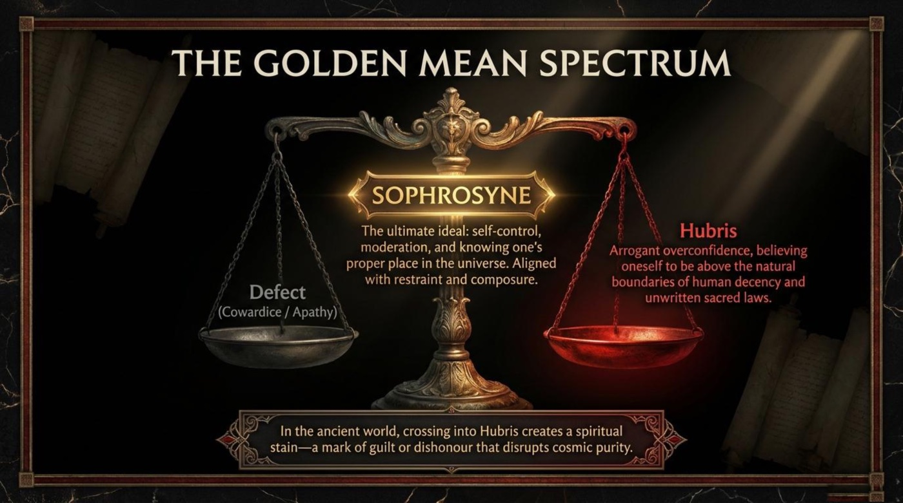
The practical point for any reader is immediate. Pay attention to the fact that the ancient Greeks treated moderation not as a mood but as a cosmic law — a law with consequences as predictable as gravity. Notice also how the lesson teaches through opposites: cowardice and hubris are not random sins; they are the two banks of the same river, and a worthy life is the navigation between them. It is worth remembering that English keeps both banks alive in single words — apathy on one side, hubris on the other.
When you learn a moral concept in a new language, learn its neighbors as well. Sophrosyne only makes sense once you can name what it protects you from — the gray apathy on the left and the burning arrogance on the right. Draw the spectrum on paper and place real people, real decisions, and new words along it.
The Unyielding Queen and the Semi-Divine Terror
Into this moral geometry walks the heroine. The lesson introduces her with a painter’s eye for character:
“Penthesilea fought with magnificent courage, driving Greek forces back and restoring Trojan hope. She possessed an unyielding spirit — stubborn and impossible to break or influence.”
— The Unyielding Amazon Queen
The material then does what it does best: it pauses the drama to hand the reader a definition. Determination, the lesson explains, is “a psychological refusal to give up against extreme difficulties.” That phrase deserves a second reading — determination is placed not in the muscles but in the psychology, which is exactly where language learners should store it.
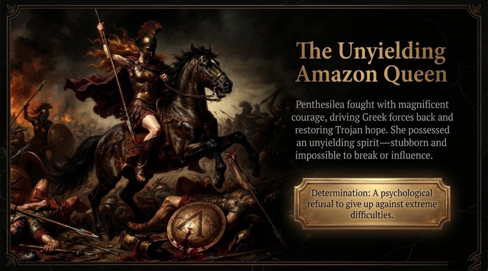
Her fury succeeds too well. The Trojan resurgence draws out the one man the lesson calls “the ultimate champion of the Greeks.” The description of Achilles is deliberately frightening, and deliberately precise in its vocabulary: “Achilles was not just a warrior; his physical presence was so terrifying that massive, veteran kings routinely panicked upon his approach.” The red banner beneath the image drives it home: “When Achilles took the field, enemy armies would break ranks — running away in sheer panic, completely destroying their organized military formations.” 📌
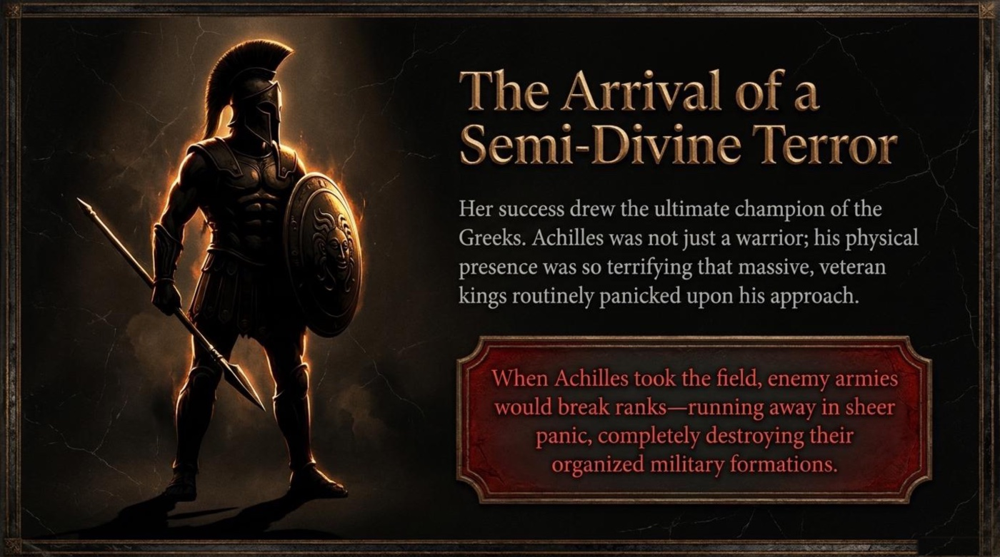
Two of the story’s temperaments now collide. The lesson frames the duel as a contest of inner states rather than of weapons, and it defines both states with surgical care:
“Penthesilea stood her ground with complete composure — total mental calmness in a deadly situation. She did not flinch (make a sudden involuntary movement of fear).”
— The Duel
“Achilles delivered a ferocious charge — frighteningly violent and wild.”
— The Duel
Look closely at the pair composure and ferocious: calm against wildness, order against fire. The outcome is stated without suspense and without cruelty: “Despite her elite martial skills, she was no match for god-like power. A decisive strike left the Amazon Queen mortally wounded in the dust.” The sentence is a small masterclass in contrastive writing — despite, no match for, mortally wounded — each phrase doing one clean job.
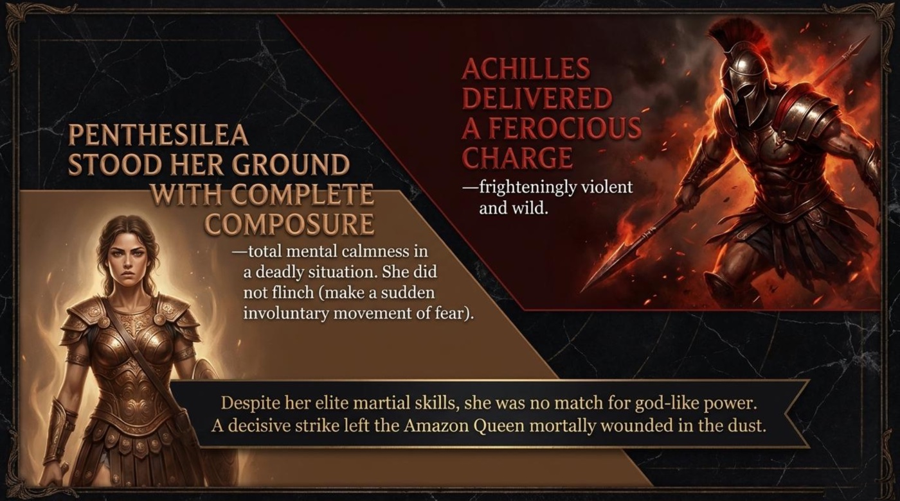
Victory, a Veiled Face, and the Anatomy of Grief
Here the lesson slows down and turns from combat to cosmic etiquette. Killing a noble enemy, it explains, created obligations:
“In ancient warfare, taking pride in defeating a noble enemy was a virtue — but only if met with humility and gratitude toward the cosmic order.”
— The Spiritual Weight of Victory
The lesson then lists the three duties of a victor in numbered circles: “1. Recognize the true worth of a fallen adversary. 2. Claim the triumph with grace. 3. Follow standard practice to honor the dead.” And it closes the moment with a line of pure narrative calm: “Following this law of the universe, Achilles leaned over his opponent to remove her helmet.” It should be noted that this small gesture — bending down, unstrapping a helmet — is presented as a ritual, almost a prayer. The material treats respect not as a feeling but as a procedure.
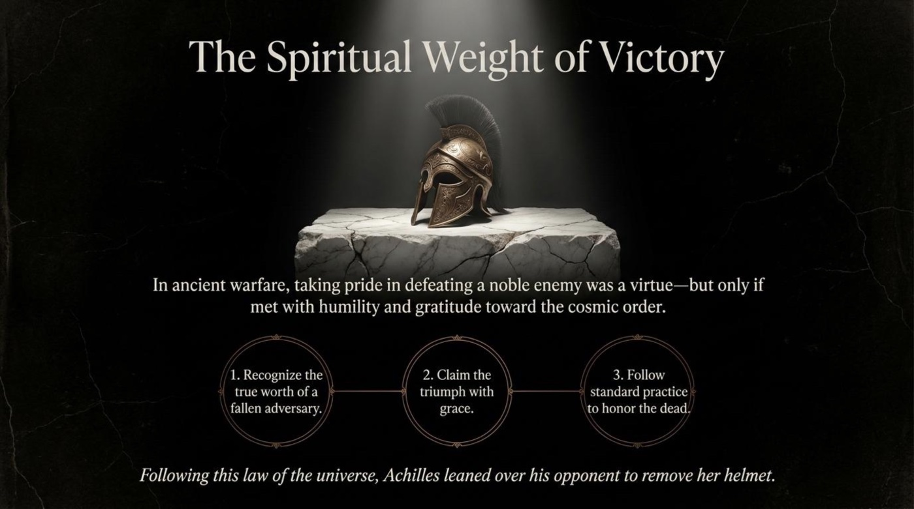
What happens next is the emotional heart of the entire lesson. The helmet comes off, and pride dies quietly on the battlefield:
“When her countenance (her face and physical features) was revealed, his warrior pride suddenly and completely vanished.”
— The Vanishing of Pride
Two more treasures of vocabulary sit around that sentence. Countenance is the elevated, literary word for a face. And beheld — “Achilles beheld; he observed something of great importance and exceptional beauty” — is the old poetic verb for seeing with the whole soul. The lesson completes the recognition in a single clause: “He saw a young woman of noble spirit and unshakeable courage.” Notice the arc: the enemy has not changed — only the eyes have.
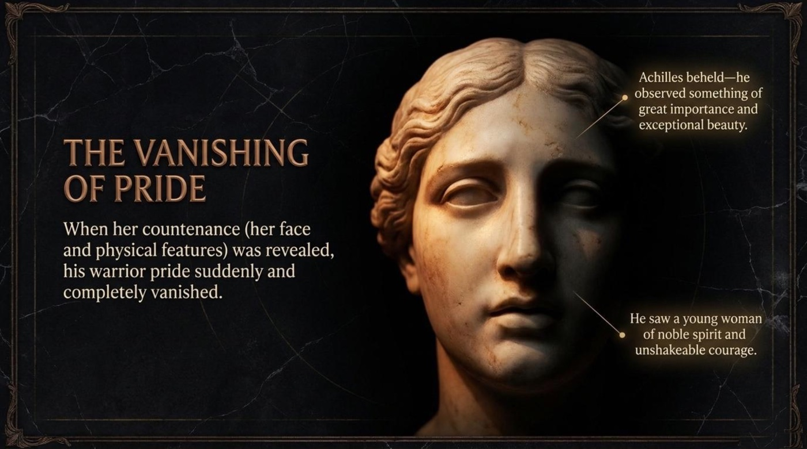
The lesson then does something rare in storytelling: it performs an emotional autopsy. Grief, it shows, is not one feeling but an intersection of three, drawn as three overlapping golden circles:
- Remorse — “a deep, painful feeling of regret.”
- Grief — “intense, overwhelming mental suffering from profound loss.”
- Awe — “a mixed feeling of deep respect, wonder, and slight fear caused by magnificence.”
“Achilles realized he had permanently cut off the future of a rare warrior. He was locked in a state of solemn (highly serious, formal) mourning as he stood over the corpse.”
— The Anatomy of a Champion’s Grief
For a language learner, that triangle is a gift. It separates three English words that learners constantly confuse, and it anchors each one to a felt experience: regret for the act, sorrow for the loss, reverence for the person. 💡
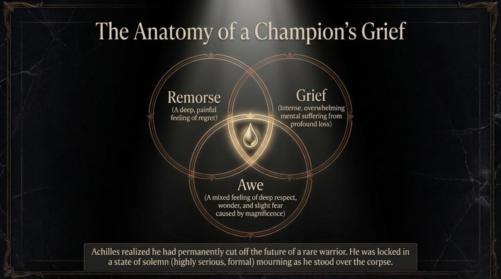
The Man Who Broke the Silence: A Transgression in Two Steps
The army understands the sacredness of the moment. The lesson renders the silence almost physically: “The army recognized the gravity (extreme importance) of the moment in respectful silence. But Thersites stepped forward.” One clause — gravity — carries the weight of the entire funeral.
Then the lesson introduces its villain with two words learners rarely see defined so bluntly. Thersites was notorious — “famously known for wicked qualities.” Pay attention to the difference this word makes: famous celebrates, notorious condemns; the fame itself is the shame. And he was deeply vulgar — “lacking basic human decency; crude and offensive.” The frame ends with the intrusion itself: “He loudly mocked Achilles, shattering the hero’s silent contemplation.”
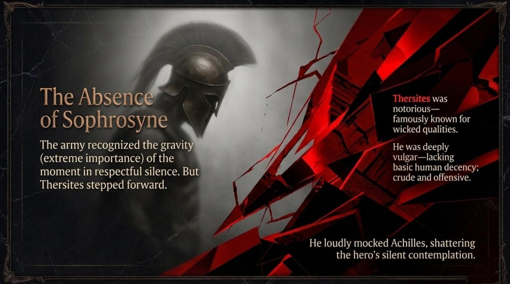
The lesson dissects the outrage with the calm of a forensic report, splitting it into two steps. Step one: the mockery. “Ridiculing a champion for showing respect.” The verdict: “He desecrated a sacred thing.” Step two: the physical act. “Taking a spear and violently gouging (tearing out violently with a sharp tool) the dead queen’s eye.” The verdict: “He was abusing a completely defenceless body, unable to protect itself.” ⚠️ The verb desecrated and the parenthesized gloss for gouging are worth memorizing together — one names the sin against the sacred, the other names the raw physical brutality.
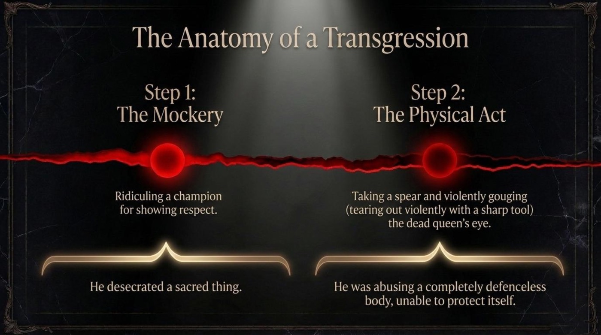
The lesson names the whole with its key legal term: “This horrific action was a textbook transgression — an act that goes beyond a moral or sacred boundary. The dead belong to the gods.” A transgression, in other words, is a step across a line — the prefix trans- means “across,” and the line here separates the living from the divine. The moral scale beneath the words tips dramatically: on one pan cowardice, on the other hubris — and the beam itself is drawn cracked and burning. The lesson’s summary is thunderous:
“Thersites completely abandoned the desirable middle ground. Lacking all internal restraint, he chose the extreme of cruelty, acting as if his military victory placed him above the laws of the universe.”
— The Ultimate Transgression
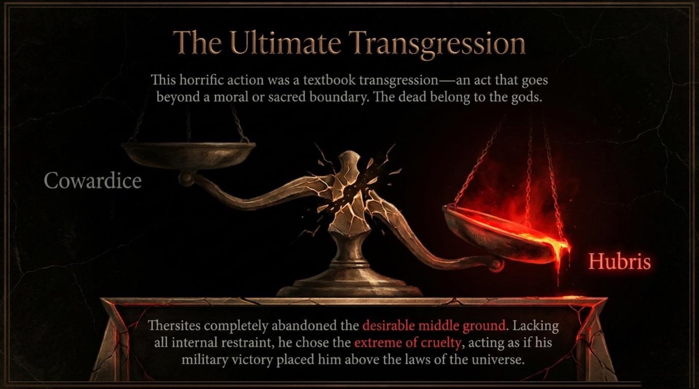
Nemesis, the Fist, and the Snapping Back of the Universe
Ancient physics now replaces ancient law. The lesson states the mechanism of justice as if it were a force of nature: “When a mortal commits an act of supreme hubris, the universe reacts instantly to pull the arrogant person back down to reality and restore the broken equilibrium.” And then comes the definition that anchors the whole myth:
“Nemesis: The unavoidable cosmic consequence or punishment that follows an act of arrogance.”
— The Inevitability of Nemesis
The English word nemesis — an unbeatable opponent, an instrument of downfall — walks straight out of this frame into modern headlines and action films. Remember that connection: vocabulary learned inside a story stays learned.
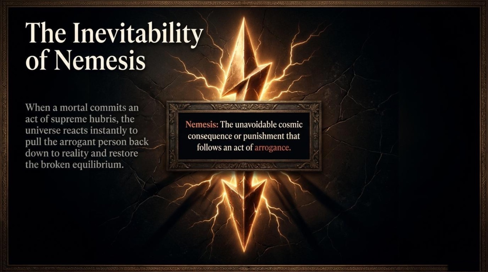
The lesson then maps the chain of vengeance in three connected diamonds. The transgression: “the violation of the dead queen.” The instrument: “Enraged by the lack of humility, Achilles becomes the literal instrument (a tool used by the cosmos to achieve a result).” The strike: “Turning away from the body in absolute fury (extreme, violent anger), Achilles strikes Thersites directly in the face with his bare fist. No weapons drawn.” 📌 The detail of the bare fist matters enormously: Achilles does not descend to Thersites’ savagery with a spear; the universe merely borrows his hand. That is the difference between revenge and justice in the grammar of this myth.
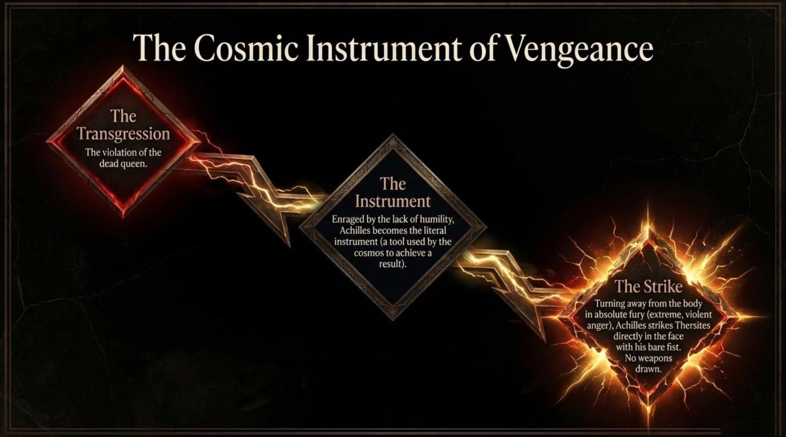
The consequence is delivered without delay, and the lesson’s vocabulary turns geological. “The blow was phenomenally powerful — delivered in a massive, incredibly unusual way.” “Thersites’ jaw was instantly shattered (broken into thousands of tiny pieces).” “He was killed on the spot.” And the closing verdict reads like a sentence passed by the universe itself: “The universe answered extreme arrogance with an immediate, crushing (overwhelmingly powerful) consequence.”
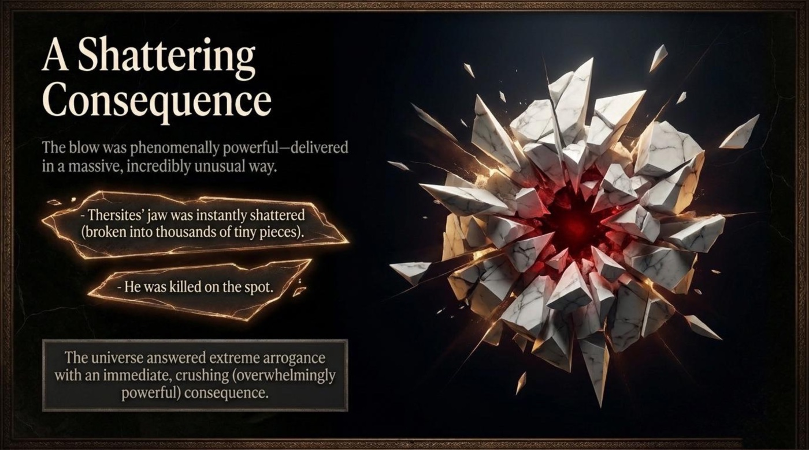
The lesson closes its cast list with a three-column anatomy of the combatants — the Noble Defeated, the Instrument, and the Transgressor — each measured by cosmic law, primary emotion, and ultimate fate:
- Penthesilea adheres to sophrosyne (she stands her ground); her primary emotion is determination; her fate: “Defeated, but honored in death.”
- Achilles is the enforcer of the Golden Mean; his primary emotion is “grief shifting to fury”; his fate: “Solemn victor; purified through dispensing justice.”
- Thersites embodies supreme hubris; his primary emotion is “vulgar spite”; his fate: “Shattered by inescapable consequence.”
Notice the elegance of the triad. One person per role, one law per person, one destiny per law — the story is a closed system of morality, as tidy as a theorem.
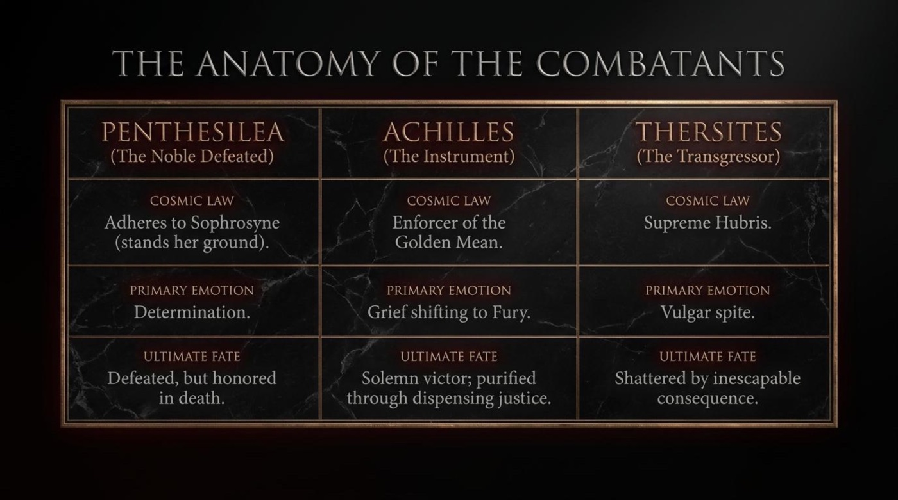
💡 Part Two — The Vocabulary of Honor: Words That Carry the Myth
The most distinctive teaching technique of this material is its inline glossary: difficult words are defined in the very sentence where they appear, wrapped in parentheses like small footnotes inside the story. It should be noted that this is one of the most effective vocabulary strategies available to a learner — the new word and its meaning arrive together, fused to an emotion. Below, the key terms are unpacked one by one, exactly as the lesson presents them.
Sophrosyne noun · Greek ideal
Literal meaning soundness of mind; self-control and moderation.
Figurative & contextual meaning the golden middle of the soul — knowing one’s proper place in the universe and acting from restraint rather than from fear or arrogance.
From the material the lesson crowns it “the ultimate ideal: self-control, moderation, and knowing one’s proper place in the universe.” Penthesilea embodies it by standing her ground before a demigod; the Greek army embodies it again by holding its silence over the dead queen.
How the material teaches it the word is not translated but visualized — it glows at the center of a balance scale between “Defect (Cowardice / Apathy)” and “Hubris.” The picture does the defining: sophrosyne is the balance point itself.
Hubris noun
Literal meaning arrogant overconfidence.
Figurative & contextual meaning the belief that one’s success or power places one above the unwritten laws that bind ordinary human beings.
From the material Thersites “chose the extreme of cruelty, acting as if his military victory placed him above the laws of the universe” — the lesson’s purest demonstration of hubris in motion.
How the material teaches it the definition is given in full at the spectrum: “believing oneself to be above the natural boundaries of human decency and unwritten sacred laws.” The phrase natural boundaries quietly compares mortals to rivers — overflow is not strength; it is flood.
Composure noun
Literal meaning a calm, controlled state of mind and manner.
Figurative & contextual meaning dignity under pressure — calmness so complete that it reads as a form of courage.
From the material “Penthesilea stood her ground with complete composure — total mental calmness in a deadly situation.” The duel is lost, yet the composure is not; that contrast is the whole point.
How the material teaches it the gloss spells it out directly — “total mental calmness in a deadly situation” — and then dramatizes it through the body: she “did not flinch.”
Flinch verb
Literal meaning to make a sudden involuntary movement of fear or pain.
Figurative & contextual meaning to visibly recoil — the tiny betrayal of nerve that the body commits without permission.
From the material “She did not flinch (make a sudden involuntary movement of fear).” A whole biography of courage hides inside that small negation.
How the material teaches it the parenthesis is the lesson’s signature move: the definition rides inside the sentence, so the reader meets the word and its meaning in one heartbeat. Remember that flinch is most powerful in the negative — without flinching is one of the strongest compliments English can pay.
Countenance noun · literary
Literal meaning a person’s face and physical features.
Figurative & contextual meaning the face as a revelation — the outer surface through which inner worth becomes visible.
From the material “When her countenance (her face and physical features) was revealed, his warrior pride suddenly and completely vanished.”
How the material teaches it the gloss defines the word plainly, while the marble portrait around it teaches the figurative layer: a face can end a war inside one man’s heart.
Remorse · Grief · Awe the grief triad
Literal meaning remorse is a deep, painful feeling of regret; grief is intense, overwhelming mental suffering from profound loss; awe is a mixed feeling of deep respect, wonder, and slight fear caused by magnificence.
Figurative & contextual meaning three circles that overlap in a champion’s mourning — regret for the act, sorrow for the loss, reverence for the person.
From the material the lesson draws the three emotions as overlapping golden rings and states the result: “Achilles realized he had permanently cut off the future of a rare warrior.”
How the material teaches it each word is bracketed with a clean gloss, and the Venn image does the rest — learners see at a glance that these are three different rooms inside one house of sorrow.
Notorious adjective
Literal meaning famously known for wicked qualities.
Figurative & contextual meaning celebrity turned sour — fame whose currency is shame.
From the material “Thersites was notorious — famously known for wicked qualities.” He is famous precisely for being awful, and the sentence never lets the reader forget it.
How the material teaches it the dash-gloss contrasts with famous by content alone: the same structure, the opposite moral charge. Pair the two words forever in your notebook.
Vulgar adjective
Literal meaning lacking basic human decency; crude and offensive.
Figurative & contextual meaning a coarseness of soul — behavior that drags a sacred moment down into the dirt.
From the material “He was deeply vulgar — lacking basic human decency; crude and offensive.” The subtitle of the whole lesson names this quality as fatal.
How the material teaches it the definition is blunt and triple-layered: decency missing, crudeness present, offense delivered. In this myth, vulgarity is not a style — it is a cosmic crime.
Transgression noun
Literal meaning an act that goes beyond a moral or sacred boundary.
Figurative & contextual meaning a step across a line that the universe itself enforces — the prefix trans- means “across,” and the line here guards the dead.
From the material “This horrific action was a textbook transgression — an act that goes beyond a moral or sacred boundary. The dead belong to the gods.”
How the material teaches it the phrase textbook transgression treats morality like grammar — a rule so established that violating it has a technical name. The related verb desecrate (to violate a sacred thing) completes the word family.
Nemesis noun · from Greek
Literal meaning the unavoidable cosmic consequence or punishment that follows an act of arrogance.
Figurative & contextual meaning the universe’s immune response to hubris — today, also the unbeatable opponent or downfall of a person.
From the material “When a mortal commits an act of supreme hubris, the universe reacts instantly to pull the arrogant person back down to reality and restore the broken equilibrium.”
How the material teaches it the lesson frames nemesis as inevitable — the title itself says so — and then shows the mechanism working in real time through Achilles’ bare fist.
The material scatters further treasures that reward a second pass: the gravity of the moment (its extreme importance), a ferocious charge (frighteningly violent and wild), solemn mourning (highly serious and formal), the violent gouging of a wound (tearing out violently with a sharp tool), an absolute fury (extreme, violent anger), a jaw shattered into thousands of pieces, and a crushing consequence (overwhelmingly powerful). Each one arrives pre-defined, each one belongs to the same semantic family — the language of weight, force, and sacred boundary.
📌 Part Three — Deeper Meaning: Metaphors and Symbols
Beyond its story and its vocabulary, the lesson thinks in symbols. Four of them organize everything the reader sees and feels, and each one carries a piece of the moral argument.
1. The Scales — Morality as Measurable Physics
Twice the lesson reaches for the same instrument: a balance scale. It first appears as the Golden Mean Spectrum, with sophrosyne glowing at the pivot, cowardice hanging on one pan, and hubris burning on the other. It returns — cracked, tipped, and on fire — after Thersites abandons “the desirable middle ground.” The symbol teaches a specific claim: moral worth is measurable, and the universe is the instrument that measures it. The material’s own interpretation is explicit: “In the ancient world, crossing into Hubris creates a spiritual stain — a mark of guilt or dishonour that disrupts cosmic purity.” A stain is a chemical imbalance; a scale out of true is a mechanical one; the metaphor converts ethics into physics so that punishment feels like gravity rather than revenge.
2. The Unveiled Countenance — The Face as Recognition
The most tender symbol of the material is a helmet coming off. The three-step code of victory ends with Achilles leaning over his opponent, and the moment the face appears, “his warrior pride suddenly and completely vanished.” The lesson’s own reading is precise: “He saw a young woman of noble spirit and unshakeable courage.” The unveiling stands for recognition — the instant when an abstract enemy becomes a specific person. For the learner, the metaphor doubles as a language lesson: the word countenance elevates the face, and the story elevates the act of truly seeing. Respect, the symbol argues, begins with attention.
3. The Triad of Grief — Emotions as a Venn Diagram
Grief in this material is never a single blob of sadness; it is three golden circles — remorse, grief, awe — overlapping around one glowing tear. The symbol argues that emotional maturity means discriminating between feelings instead of drowning in them. The lesson’s glosses make each circle teachable: “a deep, painful feeling of regret,” “intense, overwhelming mental suffering from profound loss,” “a mixed feeling of deep respect, wonder, and slight fear caused by magnificence.” Achilles stands in the center of all three at once, and the image allows the reader to hold that complexity — which is precisely what the silent army does, and precisely what Thersites cannot.
4. The Golden Ring — The Cycle of Cosmic Equilibrium
The final image folds the entire myth into a ring of four stations: “Heroic Awe & Solemn Mourning (the natural order of war),” then “Hubris & Vulgarity (Thersites breaks the boundaries),” then “Nemesis & Fury (Achilles strikes as the cosmic instrument),” and finally “The stain is removed; the universe is purified (cleansed from evil or spiritual dirt).” The ring refuses to end: equilibrium, once broken, must be restored, and the story exists to show the mechanism working. The lesson states the thesis at the center of the ring — “The fist of Achilles was simply the universe snapping back into alignment.” 📌 The exploding marble of the consequence scene becomes, in this reading, not chaos but correction.

⚠️ Part Four — Comprehension Check: Prove Your Mastery
The myth has told its story, the vocabulary has been unpacked, and the symbols have been decoded. The moment has arrived to test the knowledge this material has planted. Eight questions below draw directly from the lesson — comprehension, vocabulary in context, true-or-false judgments, and one fill-in-the-blank challenge. Every answer receives instant feedback with a short explanation, the score counts live at the top, and a final verdict arrives at the end. Remember that mastery begins where comfort ends. 🎯
A perfect score aligns the reader with the lesson’s own standard of mastery. Anything less simply marks the next chamber of the myth to revisit — the flip cards above and the original material below exist precisely for that second campaign.
✨ The Takeaway: The Universe Snaps Back into Alignment
“Crossing the boundaries of human decency results in a devastating fall. The fist of Achilles was simply the universe snapping back into alignment.”
— The Cycle of Cosmic Equilibrium
The final image of the lesson leaves the reader with a loop rather than a line: awe and mourning, then hubris and vulgarity, then nemesis and fury, then purification — the stain removed, the universe cleansed. The main takeaway for a language learner mirrors the cosmic one. Words learned inside a story about boundaries become part of a moral immune system: sophrosyne names the discipline that keeps a person balanced, hubris names the overflow that breaks the balance, and nemesis names the correction that follows. Whoever owns these three words owns a compact philosophy of life — in Greek, in English, and in every situation where success tempts a person to stand above the law.
The next steps are practical. Flip through the vocabulary cards above until each term flips itself into memory. Replay the comprehension check until the perfect verdict belongs to you. Retell the myth aloud in five sentences using at least five of the lesson’s words. And above all, return to the original illustrated material — its frames reward a second and third reading far beyond what any summary can carry.
📎 Lesson Files
The complete original material accompanies this article and opens in a new tab.
- 📄 blood-of-troy.pdf — the full illustrated lesson, “Cosmic Law and the Blood of Troy.”